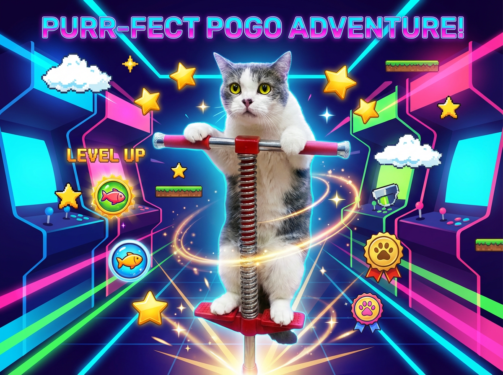

一般社団法人 新宿租界
BAKENEKO GAMES
PLAY / STORY / GUIDE
猫テーマのブラウザゲームと日記・ガイド
会員不要・無料。ブラウザで遊べ、広告の視聴は任意です。
▶ゲームを選ぶ更新情報
- 2026-05-03 こはだボット紹介コーナーを公開。看板猫 こはだ のSNS分身をご紹介。
- 2026-05-02 在籍猫紹介コーナーを公開。BAKENEKO CAFE で暮らす猫たちのデジタル図鑑。
- 2026-04-25 トップの来店・支援導線を、CAFE×猫又の双璧1ブロック（#place-hub）に集約。SNS等は補助枠＋リンクハブ。あわせて冒頭（ヒーロー／このサイト／初めての方）の文量を抑え、読みやすさを優先。
- 2026-04-25 第3弾「さよりパンチ防衛」を公開。3レーンパンチで迫りくる敵を撃退する爽快アクションです。
- 2026-04-08 審査・クロール向けに初めての方へ（サイト内ガイド）、JSON-LD（Organization / WebSite）、主要ページのcanonicalを追加。広告とサイトの仕組みのFAQを拡充、遊び方ガイド・お問い合わせに説明文を追記。
それ以前の更新を表示
- 2026-04-07 トップページ冒頭に「このサイトについて」を追加。運営目的・ゲームと広告の扱い・主要ページへの導線を文章で明示（サイトの独自性・説明性の強化）。
-
2026-04-07
bakenekocafe.studio（apex）からwww.bakenekocafe.studioへ 301 リダイレクト（Cloudflare Workerbakeneko-apex-www-redirect）。正規 URL を www に統一。 - 2026-04-07 プライバシーポリシー・利用規約・広告とサイトの仕組みを整備（AdSense・Cookie／第三者配信・お子様の利用など）。
- 2026-03-11 第3弾「さよりパンチ防衛」開発中！迫りくる敵を3レーンパンチで撃退する爽快アクション。近日公開予定。
- 2026-03-11 第2弾「なめこバランス」正式リリース！キャットタワーにモフモフ猫を積み上げるバランスゲーム。世界ランキング・広告応援対応。
-
2026-02-25
X（Twitter）シェアを強化：投稿文に日付・世界ランキング・ゲームURL・ポータルURLを追加。他ゲーム用にシェアテンプレート（
core/share-template.js）を共通化。 -
2026-02-25
タイトル画面の自社リンクバナーを共通テンプレート化（
core/banners.config.js等）。他ゲームでも同じバナーを簡単に表示可能に。 - 2026-02-25 ポータルに「更新履歴」セクションを追加。直近の変更点をトップページで確認できます。
このサイトについて
一般社団法人 新宿租界の無料ブラウザゲーム。化猫茶屋（BAKENEKO CAFE）の活動を、気軽に遊べる体験で知ってもらうのが目的です。掲載ゲームは会員不要、掲出広告は第三者配信で視聴は任意です。ポイ活ではありません。
詳しい説明を表示
BAKENEKO GAMES（公開URL：https://www.bakenekocafe.studio）は、一般社団法人 新宿租界が運営する無料のブラウザゲームポータルです。保護猫カフェ「BAKENEKO CAFE 化猫茶屋」の活動をオンラインでも知っていただくこと、そして気軽に遊べるオリジナルゲームで「猫を身近に感じるきっかけ」をつくることを目的にしています。
掲載しているゲームは、スマートフォンやPCのブラウザから会員登録なしで遊べます。スコアは世界ランキングに送信できるタイトルもあり、記録を競う楽しみ方も用意しています。リザルト画面などに表示される広告はGoogle AdSense 等の第三者配信によるもので、視聴は任意です。広告を見なくてもゲームは最後までプレイでき、利用者への金銭・ポイント・景品の付与は行っていません（いわゆるポイ活サイトではありません）。収益の一部は運営および保護猫に関わる活動に活用しています。仕組みの詳細は広告とサイトの仕組みをご覧ください。
コンテンツは、リリース中のオリジナルゲームに加え、カフェの猫スタッフの視点で綴るこはだ日記、遊び方や画面の見方をまとめた遊び方ガイド、運営情報のAboutなどで構成しています。サイトの利用条件・免責、お子様のご利用、個人情報の取扱いは利用規約およびプライバシーポリシーに記載しています。ご質問はお問い合わせから受け付けています。
当ポータルは継続的にページやゲームを更新しています。直近の変更はページ上の更新情報からもご確認いただけます。正規URLは https://www.bakenekocafe.studio です。ルートに ads.txt を配置し、掲載広告の整合性に関する照会に対応しています。
初めての方へ
この BAKENEKO GAMES は、東京都新宿区の保護猫カフェ、BAKENEKO CAFE が運営するゲームサイトです。実際にお店にいる猫達をモチーフに、無料で遊べるゲームを制作しています。
他にも関連コンテンツが複数ございますので、リンク集より各コンテンツもお楽しみくださいませ。

ゲームで遊んで、
猫たちの活動を知ろう
ゲームのリザルト画面では、関連情報やサイト内コンテンツへの案内が表示される場合があります。広告が表示される場合がありますが、閲覧は任意であり、ゲームの利用に必須ではありません。
広告が表示された場合、その収益の一部が運営および保護猫に関わる活動に活用されることがあります。内容の詳細は公式サイトをご覧ください。
▶こはだジャンプで遊ぶゲームを選ぶ

読込中…

読込中…

読込中…
BAKENEKO CAFE をもっと知る
実店舗で暮らす猫たち、X でやりとりする看板猫 こはだ。BAKENEKO CAFE の世界をもう少し詳しくご紹介します。
こはだ日記
BAKENEKO CAFE 副店長・こはだが綴る日々の記録 🐾
読込中…
サイト運営と広告表示について
-
01ゲームで遊ぶ
-
02猫たちの活動を知る
（日記や公式情報など） -
03気になった方は
公式情報や支援ページを見る
当サイトは報酬付きクリック誘導（ポイ活）ではありません。
ゲーム体験を中心に、広告表示による収益の一部を運営および保護猫に関わる活動に活用しています。
当サイトでは運営のため広告を表示する場合があります。広告の閲覧は任意であり、ゲームの利用条件ではありません。
詳細は各公式情報や支援ページをご確認ください。
2つの入口を選ぶ
BAKENEKO CAFE と千葉の猫又療養所の導線を、同じ並びでまとめています。左列がCAFE、右列が猫又です。来店予約・地図・公式・物資・採用は行ごとに対応しています。
BAKENEKO CAFE
化猫茶屋へのご来店予約、アクセス、公式情報、物資支援、採用・ボランティアはこちらです。
猫又療養所
ハンディキャップのある猫さんたちの療養・生活を支える導線です。
住所・アクセスの確定は、各公式情報を優先します。Googleマップは住所検索として外部で開きます。埋め込みは重くなりやすいため、リンク導線中心で扱います。
SNS・拡充
運営について
理念や活動の背景、店舗との関係などは、About ページで文章とリンクをまとめています。